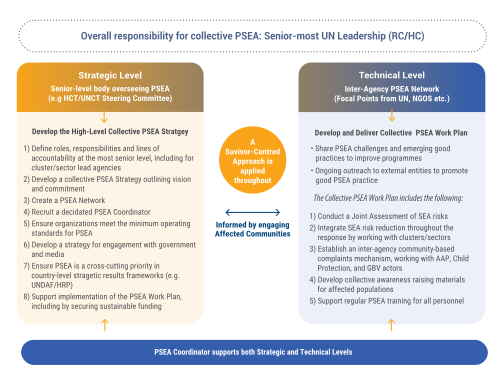
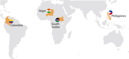

Domayo, Far North Cameroon, 2023. Photo: OCHA/Liz Loh Taylor
1. Introduction to UN Leadership in Humanitarian Settings
Background
Humanitarian needs are growing at an unprecedented level due to the impact of climate change, emerging or protracted conflicts and the spread of infectious diseases. This is compounded by an ever-growing number of challenges to deliver aid and protection services, which makes the role of humanitarian organizations and particularly that of HCs even more critical.
HCs are ultimately accountable to the people affected by crises. In doing so, they are responsible for ensuring that organizations work together to prepare for emergencies and to support the host Government in responding to crises or emerging humanitarian situations.
Mandate for humanitarian leadership
UN GA resolution 46/182 sets out the basis of the UN Secretary-General’s leadership role in ensuring “preparation for, as well as rapid and coherent response to, natural disasters and other emergencies.” To this end, the GA resolution established the position of the Emergency Relief Coordinator (ERC) to work closely with the UN Secretary-General, in cooperation with the relevant organizations and entities dealing with humanitarian assistance. The Office for the Coordination of Humanitarian Affairs (OCHA) was established in 1991 initially as the Department for Humanitarian Affairs as part of the UN Secretariat to support the ERC in this role.
Recognizing the positive role of sustainable development in mitigating drivers of conflicts, disaster risks, humanitarian crises and complex emergencies, the GA also reiterated in resolution 71/243 that a comprehensive whole-of-system response, including greater cooperation and complementarity among development, disaster risk reduction, humanitarian action and sustaining peace, is fundamental to efficiently and effectively addressing needs and attaining the Sustainable Development Goals (SDGs).
As representative of the UN Secretary-General, the RC, whether or not designated as a HC, plays a critical role at the country level, facilitating inter-agency preparedness efforts, coordinating humanitarian response,1 and promoting links between humanitarian and development planning and programming. The ERC and OCHA support them in carrying out their humanitarian role.
1 In refugee situations, UNHCR is mandated to lead the refugee response.
GA resolution 46/182 says: “In contexts where international humanitarian assistance is required, and a separate Humanitarian Coordinator is not designated and when there is no lead agency, [the Resident Coordinator] leads and coordinates the response efforts of United Nations and relevant humanitarian actors, in accordance with General Assembly resolution 46/182 and related resolutions, facilitating linkages between humanitarian and development programming for enhanced and sustainable impact.”
Where required, the ERC may choose to designate an HC to represent her/him. As outlined in the Terms of Reference for HCs:
“While the affected State has the primary role in the initiation, organization, coordination, and implementation of humanitarian assistance within its territory, in situations where a Humanitarian Coordinator (HC) is designated s/he is responsible for leading and coordinating humanitarian action of relevant organizations in country with a view to ensuring that it is principled, timely, effective and efficient, and contributes to longer-term recovery. The overall objective is to alleviate human suffering and protect the lives, the livelihoods and dignity of populations in need.”
Primary Humanitarian Leadership Responsibilities of the Resident and Humanitarian Coordinator
The RC Job Description adopted on 1 January 2019 includes detailed humanitarian responsibilities of the RC, whether or not designated as a HC, as leader of the UN Country Team (UNCT) and/or the Humanitarian Country Team (HCT), with system-wide accountability on the ground.
Coordination
Humanitarian leadership entails improving strategic coordination among relevant organizations involved in humanitarian action and actively facilitating cooperation among them, recognizing that coordination is a collective endeavour. This role must be carried out with full accountability to the affected people, in respect of the mandates and authority of all relevant organizations and, importantly, of the host Government. A humanitarian leader supports the State to help ensure that humanitarian actors responding to a crisis work together to achieve shared strategic objectives and deliver assistance in a principled, effective and complementary manner. The various categories of humanitarian actors include crisis-affected people themselves; civil-society organizations (CSOs), such as community-based and voluntary organizations, faith-based organizations, and local/national and international NGOs; the national and foreign private sector; national and foreign militaries; the Red Cross/Red Crescent Movement (International Federation of the Red Cross, International Committee of the Red Cross, National Societies); UN entities; humanitarian and development donors; in-country diplomatic corps; international and regional organizations (including financial institutions); and intergovernmental forums.
Especially in conflict situations in which the State is a party to the conflict, humanitarian action may – in line with the principles of neutrality and independence – need to be carried out with limited or no Government involvement. This helps build trust and acceptance among the parties, communities and beneficiaries, which are critical for enabling humanitarian access.
Kevin Kennedy – Coordination
Protection
The work of a humanitarian leader is guided by and has a key role in promoting respect for international humanitarian law (IHL), international human rights law (IHRL), international refugee law (IRL), and the humanitarian principles of humanity, neutrality, impartiality and independence. Humanitarian action is premised on the fact that along with having their basic needs met, affected people often also need protection from violence, abuse, coercion and deprivation. Protection is enshrined in the principle of humanity and is a prime objective of humanitarian action. The Inter-Agency Standing Committee (IASC) Principals define protection as the protection of the rights of individuals under IHL, IHRL and IRL, and it underpins all aspects of humanitarian preparedness and response. The HC’s role is critical for ensuring that the common goal of securing better protection outcomes for crisis-affected people remains central to humanitarian decision-making and response strategies.
Adam Abdelmoula – Protection
Duty of Care
As well as delivering on programmatic mandates, it is important to ensure that humanitarian actors remain physically and psychologically safe. A humanitarian leader needs to establish an appropriate balance between carrying out essential work in high-risk environments, while at the same time preserving the safety and security of personnel. The UN’s High-Level Committee on Management defines Duty of Care as “a non-waivable duty on the part of the Organization to mitigate or otherwise address foreseeable risks that may harm or injure its personnel and their eligible family members”.
The HC plays an important role in ensuring a coherent approach at the country level regarding Duty of Care for UN and humanitarian personnel. Duty of Care risks primarily comprise occupational security risks (e.g. due to an armed conflict), health risks, including risks to mental health (e.g. due to exposure to contagious diseases, prolonged exposure to high-stress situations, instances of violence, harassment or discrimination) and safety risks (e.g. working in substandard facilities).
Anders Pederson – Duty of Care
Towards the 2030 Agenda
The 2030 Agenda and the SDGs, adopted in 2015, set out a new ambition: to not just meet people’s needs, but to reduce risk, vulnerability and overall levels of need. They provide a common framework for humanitarian and development actors based on a vision of a future in which no one is left behind.
Against this backdrop, the UN Secretary-General, eight UN Principals, the World Bank and the International Organization for Migration (IOM) endorsed a Commitment to Action during the 2016 World Humanitarian Summit. In it, they agreed to seek to meet people’s immediate humanitarian needs while at the same time reducing risk and vulnerability. This entails working towards collective outcomes, across silos and over multiple years, based on the comparative advantage of a diverse range of actors inside and outside the UN system. As many protracted crises are caused and sustained by conflict and violence, it is important to also include peace actors where possible.
Much progress has been made in recent years in terms of policy and guidance to ensure connectivity between humanitarian, development and other frameworks – notably the revised UN Sustainable Development Cooperation Framework.
In acute conflict situations, the scope for collaboration might be limited by the need to abide by the principles of neutrality, independence and impartiality to safeguard access to people in need. Whatever the context, collaboration must take place in a manner that neither undermines adherence to humanitarian principles nor exposes affected populations or humanitarian workers to greater risks. Humanitarian, development and peace actors should develop the right level of collaboration for the context.
2. Normative Framework for Humanitarian Action and Leadership
The normative framework comprises UN resolutions and policies, international laws and treaties (including humanitarian law), and accepted principles and standards. It sets out the structure and role of humanitarian leadership, and it guides in-country interactions during crises, providing support and a mandate for a principled humanitarian response.
United Nations General Assembly resolution 46/182
UN GA resolution 46/182 sets out the framework for the coordination and delivery of UN-led international humanitarian assistance under the leadership of the UN Secretary-General. This resolution continues to guide the work of the humanitarian system today. It established the ERC position; the UN Department of Humanitarian Affairs, which in 1998 became OCHA; the IASC; the Central Emergency Revolving Fund, which in 2005 became the Central Emergency Response Fund (CERF); and the Consolidated Appeals Process, which in 2013 was replaced by the Humanitarian Programme Cycle (HPC).
>See section A.3 for more details on the Humanitarian Architecture.
These mechanisms have all been subsequently refined and expanded, and they continue to form key cornerstones of the current humanitarian system.
Resolution 46/182 also set out the guiding principles for humanitarian assistance, including that humanitarian action must be provided in accordance with humanitarian principles (see below).
These guiding principles address the relationship and interaction between State sovereignty and principled humanitarian action, including the primary responsibility of each State to assist and protect people affected by humanitarian emergencies on its territory and, when called upon, to facilitate humanitarian organizations in providing humanitarian assistance for which access to affected people is essential.
Since the adoption of resolution 46/182, subsequent humanitarian resolutions of the GA, the Economic and Social Council (ECOSOC) and the Security Council have continued strengthening the international normative framework, providing guidance and mandates on humanitarian action and coordination for addressing challenges that have emerged from increasing humanitarian needs and the changing operating environment. These themes include humanitarian access, the protection of civilians, internal displacement, accountability to affected people, humanitarian civil-military coordination, and the safety and security of humanitarian personnel.
Regarding refugees and migrants, the Compact on Refugees, and the Compact for Safe, Orderly and Regular Migration, which the GA adopted in 2018, set out the international framework for international support for managing refugee movements and large-scale migration flows.
All decisions taken in the GA and ECOSOC are equally binding on both the UN Secretariat and the UN funds and programmes that are accountable to these principal organs. These resolutions are not legally binding on Member States, but it has been common practice for them to adopt resolutions on humanitarian issues by consensus, giving them more prominence and weight.
HCs can refer to the humanitarian resolutions and key policy decisions of the GA and ECOSOC for in-country interactions to help Governments, humanitarian organizations and other relevant parties strengthen their understanding of and support for a more principled, accountable and effective humanitarian response. In some operating contexts, humanitarian resolutions are essential in providing the normative basis, political support and legislative mandate for certain humanitarian activities, and in legitimizing and facilitating the roles and responsibilities of the HC and international humanitarian organizations. The leadership should engage with OCHA’s in-country representatives or its regional offices for further support on normative frameworks in relation to carrying out their humanitarian mandate.
A Brief History
Key Milestones in strengthening the coordination of UN-led humanitarian assistance
Humanitarian Principles
Humanity
Human suffering must be alleviated wherever it occurs. The goal of humanitarian action is to protect life and health while ensuring respect for human beings.
Impartiality
Human suffering must be alleviated wherever it occurs. The goal of humanitarian action is to protect life and health while ensuring respect for human beings.
Neutrality
Human suffering must be alleviated wherever it occurs. The goal of humanitarian action is to protect life and health while ensuring respect for human beings.
Independance
Human suffering must be alleviated wherever it occurs. The goal of humanitarian action is to protect life and health while ensuring respect for human beings.
Humanitarian Principles
As established in resolution 46/182 and reaffirmed in subsequent resolutions, humanitarian action must be provided in accordance with the humanitarian principles of humanity, neutrality, impartiality and independence (the latter added in GA resolution 58/114 in 2003), which are central to establishing and maintaining access to affected people.
To reinforce the principle of independence within the UN system, HCs can rely on Article 100, Chapter XV of the UN Charter2 to remind UN personnel that they “shall not seek or receive instructions from any government or from any other authority external to the Organization” and that Member States should not “seek to influence them in the discharge of their responsibilities.”
In addition, IHL entitles impartial humanitarian organizations to offer their services to the parties to an armed conflict for the benefit of people who are not fighting. (Such offers are not considered interference in domestic affairs and do not affect the legal status of armed groups.) Once consent to humanitarian services is obtained from the territorial State, IHL also requires that all parties to the conflict allow and facilitate the rapid and unimpeded passage of humanitarian relief for civilians in need, which is impartial in character and conducted without adverse distinction.3
Three main bodies of international law guide humanitarian action: IHRL, IHL and IRL, as reflected in treaty and customary law. These are complemented by regional treaties, such as the African Union Convention for the Protection and Assistance of Internally Displaced Persons in Africa (Kampala Convention). Other documents, such as the Guiding Principles on Internal Displacement (1998), provide useful restatement and summary of the various legal obligations and have been incorporated into the domestic legislation of some States.
When referring to international law, it is important to note that not all States are party to the relevant treaties of IHRL, IHL and IRL.4 However, some fundamental rules are considered customary and are thus binding independently of treaty participation.
IHRL applies in times of peace and in situations of violence, including armed conflict, as human rights are fundamental to every human being. IHRL lays down obligations that States are bound to respect. A State may restrict or suspend a limited set of rights during a serious public emergency (referred to as ‘derogation’), but certain human rights – such as the prohibition of torture and fair trial rights – are non-derogable, meaning they cannot be limited or suspended in any way, at any time, for any reason, even during an armed conflict. In addition, de facto authorities or non-State armed groups that exercise Government-like functions and control over territory are increasingly expected to respect international human rights norms and standards when their conduct affects the human rights of individuals under their control.5
At the core of IHRL is the International Bill of Human Rights, which consists of three elements: the Universal Declaration of Human Rights, the International Covenant on Civil and Political Rights (ICCPR) with its two Optional Protocols, and the International Covenant on Economic, Social and Cultural Rights (ICESCR) with its Optional Protocol. Under the ICESCR, each State party to the Covenant recognizes the right to an adequate standard of living, including adequate food, clothing and housing, and has committed to take steps to ensure minimum essential levels of these rights to the maximum of its available resources, including those available from the international community through international cooperation and assistance. This includes ensuring that populations are not deprived of essential foodstuffs, essential primary health care, or basic shelter and housing. The right to life and the prohibition of inhuman treatment under the ICCPR have also been interpreted as including a requirement to accept offers of external humanitarian assistance. In resolutions 43/131 (1988) and 45/100 (1990), the GA affirmed that “the abandonment of the victims of natural disasters and similar emergency situations without humanitarian assistance constitutes a threat to human life and an offence to human dignity.” The Convention against Torture, the Convention on the Rights of the Child and its Optional Protocol to the Convention on the Rights of the Child on the involvement of children in armed conflict are also widely ratified and can be particularly relevant in humanitarian crises.
International humanitarian law
IHL aims to limit the effects of armed conflict by protecting people who are not or no longer fighting (civilians, wounded and sick fighters, prisoners of war).6 IHL strikes a balance between the competing considerations of humanity and military necessity.
When carrying out humanitarian operations in situations of violence, it is important to determine whether the violence amounts to an armed conflict in order to know whether IHL applies. An international armed conflict exists when two or more States resort to armed force against each other, even if one of the parties denies the existence of a state of war. A non-international armed conflict exists when one or more non-State armed groups are fighting, either between themselves or against State armed forces, and the following two cumulative criteria are met:
the non-State armed group must possess organized armed forces that are under a certain command structure and have the capacity to sustain military operations, and
the hostilities must meet a minimum threshold of intensity.
In a non-international armed conflict, IHL binds both the State and non-State parties to the conflict. Determining the existence of an armed conflict requires a thorough assessment of the facts on the ground and some legal expertise. Moreover, the decision to communicate publicly about the existence of an armed conflict and its implications under IHL may entail political considerations and some coordination with other parts of the UN.
The principal rules of IHL are found in the four Geneva Conventions of 1949 (applicable in international armed conflict except for common article 3), Additional Protocol I of 1977 (applicable in international armed conflict) and Additional Protocol II of 1977 (applicable in non-international armed conflict). As stated above, it is important to note that not all States are party to all treaties. Many of the fundamental rules in these treaties (e.g. on humane treatment, fair trial rights, offers of humanitarian services, the protection of civilians in the conduct of hostilities) are considered part of customary international law7 and applicable in both types of armed conflict. However, some differences remain between the rules applicable in international and non-international armed conflict.
7 All States are party to the four Geneva Conventions. Customary international law consists of rules that come from “a general practice accepted as law” and exists independent of treaty law. For more details see: www.icrc.org/en/war-and-law/treaties-customary-law/customary-law
IHL contains specific rules that govern the parties’ conduct of hostilities with a view to sparing civilians and civilian objects, such as the rules of distinction, proportionality, and precautions in and against the effects of attack. Medical personnel, transport and facilities are afforded special protection requiring certain precautions before they might be lawfully harmed in an attack. IHL allows offers of impartial humanitarian services for people who are not or no longer fighting, and it regulates the passage of humanitarian relief. It also requires the freedom of movement of humanitarian personnel, and the protection of humanitarian personnel and assets against attack, harassment, misappropriation, looting and other forms of interference.8
Kevin Kennedy – International humanitarian law (IHL)/ Human Rights
INTERNAL DISPLACEMENT
The Guiding Principles on Internal Displacement (1998) set out various legal protections derived from IHRL and IHL to provide a framework for the protection of and assistance to internally displaced persons (IDPs) who have had to flee, particularly as a result of or in order to avoid the effects of armed conflict, situations of generalized violence, violations of human rights, or natural or human-made disasters, and who have not crossed an internationally recognized State border.9
In addition to their fundamental human rights, in situations of armed conflict civilians enjoy safeguards that are specifically related to internal displacement.
These include the right to seek safety in another part of the country; freedom of movement, including the right to move freely in and out of camps or settlements; the right to leave their country and to seek asylum in another country; the right to satisfactory conditions of shelter, hygiene, health, safety and nutrition; and respect for property rights relating to possessions left behind.
9 While the Guiding Principles are not legally binding, they have gained significant authority and are recognized by the GA as an important framework for the protection of IDPs. Many States have incorporated them into domestic law.
IRL protects refugees and asylum-seekers who are no longer protected by their own country, are outside their country of origin, and are at risk of or victims of persecution and other forms of serious harm in their country of origin. IRL provides specific rights and standards of treatment for their stay in the country of asylum. The specific legal regime protecting refugees’ rights is referred to as ‘international refugee protection’. The rationale behind the need for this regime lies in the fact that asylum-seekers and refugees lack the protection of their country and are therefore in a unique predicament, which calls for additional safeguards. The 1951 Convention Relating to the Status of Refugees and its 1967 Protocol10 provide a universal code for the treatment of refugees and include core principles of protection, such as non-discrimination and non-refoulement.11
10 The 1951 Convention and its Protocol place a treaty obligation on States that have signed the Convention to cooperate with UNHCR regarding the key cornerstones of refugee protection.
11 Non-refoulement is a fundamental principle of international law that forbids a country receiving asylum-seekers from returning them to a country in which they would likely be in danger of persecution.
Complementing the above-mentioned bodies of international law, the Conventions Relating to the Status of Stateless Persons (1954) and on the Reduction of Statelessness (1961) are the key international conventions addressing statelessness.12 The 1954 Convention provides the legal definition of a stateless person as someone who is “not recognized as a national by any state under the operation of its law.” It establishes minimum standards of treatment for stateless people, such as rights to education, employment and housing, and it guarantees them a right to identity, travel documents and administrative assistance.
The 1961 Convention aims to prevent statelessness and reduce it over time, for instance by establishing that children are to acquire the nationality of the country in which they are born if they do not acquire any other nationality, and setting out safeguards to prevent statelessness due to the loss or renunciation of nationality and State succession.
Core Humanitarian Standard and Sphere Standards
The Core Humanitarian Standard on Quality and Accountability (CHS) sets out nine commitments that organizations and individuals involved in humanitarian response implement to improve the quality and effectiveness of the assistance they provide. It outlines the policies, processes, procedures and practices that an organization needs in order to deliver quality assistance, while at the same time being accountable to communities and crisis-affected people.
The Sphere Movement was started in 1997 by a group of humanitarian professionals aiming to improve the quality of humanitarian work during disaster response. With this goal in mind, they framed a Humanitarian Charter and identified a set of humanitarian standards to be applied in humanitarian response.
The Sphere standards have become a primary reference tool for national and international NGOs, volunteers, UN agencies, Governments, donors, the private sector and many others. Today, Sphere is a worldwide community that brings together and empowers practitioners to improve the quality and accountability of humanitarian assistance. Sphere’s flagship publication, the Sphere Handbook, is one of the most widely known and internationally recognized sets of common principles and universal minimum standards in humanitarian response.
3. Coordinating Across the Humanitarian Architecture
The humanitarian architecture comprises a wide variety of organizations working at (and across) different levels: international, national and subnational. The HC plays an important role within this framework by bringing together and facilitating cooperation among the various stakeholders, including the affected population, national Governments, NGOs, UN entities and other actors.
Global Humanitarian Leadership
To strengthen collective international efforts to provide humanitarian assistance, Member States came together in 1991 and established the IASC and the position of the ERC, as Chair of the IASC. Through GA resolution 46/182, the IASC became the global inter-agency forum for coordination, policy development and decision-making for key UN and non-UN humanitarian partners, including the International Red Cross and Red Crescent Movement, national and international NGOs, NGO consortiums and the World Bank.
The ERC is supported by OCHA and also serves as the Under-Secretary-General (USG) for Humanitarian Affairs (i.e. the head of OCHA). The ERC is appointed by the UN Secretary-General to serve as her/his principal adviser on humanitarian issues, and to lead, coordinate and facilitate humanitarian responses to all emergencies requiring humanitarian assistance. S/he also acts as the central focal point with Governments and intergovernmental and non-governmental organizations for humanitarian assistance, chairs the IASC, and maintains close contact with and provides support to HCs.
OCHA is part of the UN Secretariat. OCHA supports the ERC at the global level and HCs at the field level by working with them to coordinate timely, principled and effective humanitarian action. OCHA’s support role includes, but is not limited to, helping HCs advocate for the rights of people in need, developing humanitarian policy and analysis, managing humanitarian information systems, and administering humanitarian financing mechanisms such as the Country-Based Pooled Funds (CBPFs) and CERF. OCHA typically supports HCs through a country office and, in the case of RCs with no humanitarian designation, through its regional offices and in some cases through a Humanitarian Advisory Team (HAT) in country.
In refugee contexts, UNHCR is mandated to lead the refugee response, including carrying out sectoral inter-agency coordination, contingency planning, response and resource mobilization, and finding durable solutions. In contexts involving refugees and IDPs, the Joint UNHCR-OCHA Note on Mixed Situations – Coordination in Practice details the division of responsibilities between UNHCR Representatives and RCs and HCs.
The IASC is supported by subsidiary bodies – groups of decision makers and experts who inform and carry out the priorities set by the IASC. These groups include the Deputies Group, which drives progress on key strategic issues tasked by the IASC Principals, and serves as a critical platform for strategic dialogue and decisions on issues and processes that require senior leadership; the IASC Operational Policy and Advocacy Group, which drives the IASC’s strategic work; the Emergency Directors Group (EDG), which advises the IASC on operational issues of strategic concern, and mobilizes agency and global cluster resources to address strategic and operational challenges and gaps in support of HCs; and the IASC Task Forces, which drive collective action and provide response-wide guidance, tools and technical support for specific areas of humanitarian response as tasked, which may be of particular relevance to HCs.
For more information on the IASC’s working methods and structures see: this link
IASC Humanitarian Leadership Structure
Host Government and Regional Organizations
Host Government
At the country level, the State has the primary responsibility to assist and protect all people affected by an emergency within its territory, including by initiating, organizing, coordinating and implementing the humanitarian response. If the affected State is unable or unwilling to fulfil its international obligations, the RC, whether or not designated as a HC, and the HC should strive to ensure that people in need receive the required assistance and protection, while respecting the State’s sovereignty. S/he should do so by advocating with the State to fulfil its obligations and by offering international assistance as appropriate.
When international humanitarian assistance is required, it should be provided with the affected country’s consent – in principle, based on an appeal by the affected country. The HC leads and coordinates the international response at the country level, ensuring that it adheres to humanitarian principles, and that international responders respect and support the State’s central role. States whose populations need humanitarian assistance are called on to facilitate the work of humanitarian organizations in implementing humanitarian assistance. Where relevant, the HC also advocates with the State for access (commonly referred to as ‘humanitarian space’) so that humanitarian actors can reach affected people to ensure those in need receive the required assistance and protection.
In situations of armed conflict, the State and parties to armed conflict are required to allow and facilitate the safe, timely and unhindered access of impartial humanitarian organizations to deliver humanitarian assistance and protection to people in need. Where parties to armed conflict other than the State (e.g. non-State armed groups) are in de facto control of territory, they bear the primary obligation to meet the basic needs of the population under their control. Given her/his ultimate accountability to the affected population, the HC should advocate with these parties regarding respect for IHRL and IHL and remind them of their obligations towards affected populations (including refugees, migrants, IDPs and host communities).
Catherine Sozi – Host Government
Regional organizations and intergovernmental forums
Regional organizations (such as the African Union, the Association of Southeast Asian Nations, the Commonwealth of Independent States, and the Community of Latin American and Caribbean States, among many others) are increasingly engaging in humanitarian action, mobilizing their membership to support Member States affected by humanitarian crises. In 2015, the UN GA called for strengthening cooperation between the UN and regional and subregional organizations to benefit from their respective comparative advantages.
Many intergovernmental organizations are active in both emergency preparedness and response, helping Member States to improve the effectiveness of humanitarian action through strategic partnerships and joint planning, sharing good practice and fostering common understanding. Cooperation between the UN and these regional organizations has strengthened support among neighbouring countries and promoted subregional collaboration – especially in response preparedness – through coordination, training, dissemination of information, standardization of tools and discussion of common themes. Some regional mechanisms also include mutual aid tools and coordination forums.
NGOs, CSOs, and the Red Cross and Red Crescent Movement
NGOs
In many humanitarian contexts, NGOs deliver the bulk of international humanitarian assistance. They are often well established through strong partnerships with local organizations and communities, including in locations where the UN and international organizations have limited or no presence. As such, NGOs are central to humanitarian preparedness and response, and valuable allies to the leadership in ensuring humanitarian action is coordinated and effective in reaching people most in need. NGOs must be treated as equal partners with UN agencies or international organizations and be involved in all aspects of the response, including strategic decision-making. Humanitarian NGOs are important members of HCTs, and it is the HC’s role to facilitate and support their work as part of broader inter-agency efforts.
When NGOs’ work is restricted, particularly by Government policies, NGOs will often call on the support of the in-country leadership in advocating for an operating environment that is conducive for principled NGO action. There is a direct link between NGOs’ ability to operate in a principled manner and the effectiveness of a humanitarian response. Restrictions on NGO action should be treated as a serious concern.
Ensuring continued and proactive engagement with NGOs is central to broader coordination efforts. In most situations, NGOs will organize themselves into NGO networks/forums, which also provide an effective mechanism to engage broader, collective perspectives. RCs, with or without the designation of a humanitarian role, and HCs should engage with NGO forums, and they may choose to also directly engage a diverse group of representative NGO leaders, including women leaders and those representing particular at-risk populations, to benefit from their analysis and perspectives on humanitarian issues.
Some large INGOs continue to directly deliver relief items and services, but the majority are increasingly supported by their local and national partners, who are instrumental in ensuring last-mile delivery. In recent years, there has been increased recognition of the central role of local and national NGOs and CSOs in supporting crisis-affected communities. A range of efforts, broadly termed ‘localization’, are under way to ensure that the expertise and critical role of local and national NGOs is more central to the planning and implementation of humanitarian operations, and that local and national NGOs have better access to resources and take greater leadership roles in decision-making processes. The leadership should be aware of the importance of supporting women-led NGOs and NGOs working with groups at risk of being left behind (such as organizations of persons with disabilities and marginalized communities) to take greater roles in decision-making on humanitarian matters.
There are many global consortiums that act as umbrella agencies providing a range of support to their NGO members, including the three IASC standing invitees – the International Council of Voluntary Agencies (ICVA), InterAction and the Steering Committee for Humanitarian Response – as well as a range of newer networks that have developed in response to the emerging localization agenda in recent years, including the NEAR Network13 and the Charter for Change.14 ICVA and InterAction provide ongoing programmes of support to national-level NGO forums.
A wide range of CSOs are engaged in providing humanitarian assistance to communities in need. This voluntary, community-driven nature means CSOs can often be large and influential organizations. They have a role in ensuring the representation of and accountability to affected populations. CSOs engage community workers and volunteers and established or emerging leaders within the populations they support, including women’s rights leaders or representatives of women-led organizations that provide specialized services to women and girls. These can be important points of contact for humanitarian actors.
Different forms of local leadership should be recognized and considered, particularly the roles of village, camp or community leaders. These leaders may already be key stakeholders in coordination with the Government or other actors and will therefore be vital to the management of a humanitarian response within their communities. In many situations, communities themselves may be the only responders.
Faith leaders and faith-based organizations also play an important and increasingly recognized role. For example, experience from work in Ebola-affected countries has shown that faith leaders can play a key role in the response to and recovery from health emergencies. In recent years, many international faith-based networks or confederations have worked extensively on their own approaches to localization to further embed their efforts in their local networks, predominantly working with local CSOs.
When visiting humanitarian settings throughout the country, the HC should aim to meet, wherever possible, local leaders and discuss with the key humanitarian actors how they are ensuring their perspectives are included in strategic or operational decision-making.
Ola Almgren – Role of CSOs
Red Cross and Red Crescent Movement
The International Red Cross and Red Crescent (ICRC) Movement is the world’s largest humanitarian network, comprising nearly 100 million members, volunteers and supporters in 192 National Societies. The Movement comprises three core components: National Red Cross and Red Crescent Societies (National Societies), the International Federation of Red Cross and Red Crescent Societies (IFRC), and the International Committee of the Red Cross.
The Movement works in accordance with the fundamental principles of humanity, impartiality, neutrality, independence, voluntary service, unity and universality.
National Societies occupy a unique position as auxiliaries to public authorities in their respective countries. They provide disaster relief, support health and social programmes, and promote IHL and humanitarian values. They work alongside national and local public authorities in disaster situations, and they are often the first points of contact for Governments seeking additional support from IFRC (in natural disasters) and ICRC (in situations of armed conflict).
IFRC interacts with Governments directly through the National Societies, coordinating and directing assistance in natural disasters. IFRC and National Societies also engage in preparedness and development activities, including disaster preparedness, emergency health, disaster law, water and sanitation, and humanitarian diplomacy. As such, they are important members of the HCT.
Based on its mandate under the 1949 Geneva Conventions, ICRC deals directly with Governments. In situations of armed conflict and violence, ICRC may coordinate the activities of other components of the Movement. IFRC and ICRC are standing invitees to the IASC. The HC should seek to engage with the Movement across all phases of a humanitarian response, including at strategic levels (inviting them to and ensuring their engagement with the HCT). For more information see: www.ifrc.org/en/who-we-are/the-movement/
The Private Sector
The humanitarian community is increasingly engaging with the private sector to strengthen emergency preparedness and response. The presence of private companies and networks on the ground, their local expertise and access to resources, and their ability to swiftly adapt and innovate make them key stakeholders in supporting localized humanitarian action. This is particularly important given the growing complexity of the world’s emergencies and the increase in humanitarian need, which require the coordinated action of a wide range of stakeholders.
In addition to mobilizing resources (financial and non-financial), private sector engagement entails integrating business networks – such as the OCHA-UNDP Connecting Business initiative (CBi) networks, UN Global Compact local networks, and chambers of commerce – into humanitarian coordination systems to fully leverage their expertise in support of a range of activities, including aid delivery, humanitarian advocacy and information management. In some countries, the private sector may have a seat in the HCT. Engaging the private sector can also help to strengthen humanitarian-development collaboration and disaster risk reduction, as demonstrated by the Private Sector Alliance for Disaster Resilient Societies.15 However, engaging with the private sector can involve potential reputational risks. For this reason, it is critical that due diligence is conducted on companies before engaging with them. UN agencies, NGOs and Governments generally have focal points for private sector partnerships and due diligence processes.16
Cooperation between UN agencies and the business sector is framed by the Principles of the UN Global Compact,17 which sets out a principled-based approach to doing business. This requires companies to operate in ways that, at a minimum, meet fundamental responsibilities in the areas of human rights, labour, environment and anti-corruption.
Where the scope and scale of a crisis requires it, the ERC is responsible for designating a HC, following consultation with the IASC. In most cases, the RC will take on the role, but in some circumstances a stand-alone HC, a UN agency, an NGO representative or a Regional or Deputy HC may be designated to coordinate the humanitarian response.
Designated Leadership Arrangements
Normative framework for HC designations
The practice of designating HCs dates to the early 1990s and is grounded in normative UN documents developed in consultation with the IASC. GA resolution 46/182 from 1991 refers to
“the Resident Coordinator [who] should normally coordinate the humanitarian assistance of the United Nations system at country level.”
The first specific mention of a humanitarian coordination position in UN resolutions appears in Security Council resolution 733 from 1992, whereby the Security Council requested the UN Secretary-General to increase the provision of humanitarian assistance by the UN and its partners in Somalia
“in liaison with the other international humanitarian organizations and to this end to appoint a coordinator to oversee the effective delivery of this assistance.”
After the appointment of the first HC in 1992, the designation of HC positions in response to humanitarian emergencies quickly evolved into standard practice. By 1994, the IASC had codified the basic parameters of the designation process, including the ERC’s competence to take the final decision and make use of the roster of experienced humanitarian managers (now called the HC Pool). Since then, the process has remained largely unchanged, although efforts to diversify the HC Pool’s membership continue, with specific focus on geographic representation and gender balance.
Designating leadership positions
Where the impacts of a humanitarian crisis require the designation of a HC, and where the RC in place has the right profile to serve as HC, the ERC, following consultations with the IASC, will confirm his/her designation. In a limited number of situations where the RC is not considered to have the necessary humanitarian profile, the ERC may, following consultations with the IASC, choose to appoint a HC outside the RC system. In instances where one operational UN agency or NGO is providing most of the humanitarian assistance, the ERC may consider designating that agency or an NGO representative as HC, acting under the authority of and reporting to the ERC.
In situations where there is a need to designate regional coordinators for crises that go beyond national borders, the ERC may consider assigning such functions to a Regional HC working with RCs and/or HCs in several countries.
The ERC, in consultation with the IASC, may also choose to designate a Deputy HC (DHC) to support the HC in carrying out humanitarian coordination functions, either across the country or for a specific geographical area, particularly in situations where multiple or large-scale crises require dedicated coordination capacity.
Accountability and Performance Management
HCs are ultimately accountable to all people in need. Effective inter-agency mechanisms for accountability to affected people (AAP) should be established to ensure this is duly recognized and remains central to their humanitarian leadership. In-country humanitarian leadership is also accountable to the ERC for ensuring that the delivery of international humanitarian assistance and protection meets affected people’s needs and is delivered according to the mandates of all relevant humanitarian organizations. This equally applies to all RCs when they are performing humanitarian functions, irrespective of whether they are designated as a HC.18
18 This does not supersede the RC’s accountability to the UN Secretary-General.
If international humanitarian assistance is required and a separate HC position is not established, the RC is accountable to the ERC for the performance of humanitarian coordination functions. In fulfilling this function, the RC is supported by OCHA, usually through the regional office or, in some cases, an in-country HAT.
The ERC also assesses the performance of RCs and HCs in proactively preparing for crises. Since the effectiveness of emergency response operations depends heavily on the quality of prior preparedness efforts, the leadership skills of the RC or the HC in coordinating preparedness activities of either the UNCT or HCT members and relevant humanitarian actors are critical, and they may be assessed by the ERC regardless of whether a humanitarian emergency unfolds.
5. Competencies for Effective Humanitarian Leadership
Humanitarian leaders work in fluid situations with a wide range of different actors, some of whom may be hostile or ambivalent to humanitarian efforts, or unaware of their importance. As a result, successful humanitarian leaders generally exhibit an unusually broad range of leadership qualities and demonstrate a strong values base.
With this in mind, the IASC agreed a series of competencies that are critical for humanitarian coordination and leadership. These go beyond normal planning-and-operating procedures to define the higher-level competencies required in situations of rapid change, uncertainty and complexity.
Leadership
Formulating Strategies, Applying Humanitarian Principles and Norms: Demonstrates a broad-based understanding of the growing complexities of humanitarian issues and activities. Creates a strategic vision of shared goals based on humanitarian principles and norms and ensures broad acceptance of it. Develops a road map that enhances humanitarian action.
Deciding and Initiating Action: Makes prompt, clear decisions that may involve tough choices or considered risks. Takes responsibility for actions, projects and people. Takes initiative, acts with confidence and works under own direction. Initiates and generates activity. Provides others with clear direction. Modifies decisions, when necessary, in light of new information.
Managing Relationships
Relating and Networking: Establishes good relationships with stakeholders and staff. Builds wide and effective networks of contacts inside and outside the organization. Relates well to people at all levels. Manages conflict. Makes effective use of political processes to influence and persuade others.
Fostering Humanitarian Teamwork: Builds and maintains humanitarian partnerships. Is committed to working in partnership with the HCT. Promotes a climate of teamwork and harmony and facilitates a team approach. Pursues the efficient use of common resources and common goals. Shares information and supports others. Ensures the full participation of team members in common endeavours. Encourages clear, open and respectful dialogue.
Influencing and Representing
Advocacy and Negotiation: Can effectively influence or persuade others of a course of action. Is an effective advocate of humanitarian principles on behalf of the humanitarian community. Is able and prepared to adopt a number of ways to negotiate to gain support and influence diverse parties, with the aim of securing improvements for humanitarian access and provision of assistance, and to ensure protection of the affected population.
Presenting and Communicating Information: Speaks clearly and fluently. Expresses opinions, information and key points of an argument clearly. Makes presentations and undertakes public speaking with skill and confidence. Identifies information needs of a target audience or population and works systematically to address the needs. Projects credibility.
Managing Complexity
Analysing Complexity: Analyses numerical data, verbal data and all other sources of information. Breaks information into component parts, patterns and relationships. Probes for further information or greater understanding of a problem. Makes rational judgements from the available information and analysis. Produces workable solutions to a range of problems. Demonstrates an understanding of how one issue may be a part of the larger humanitarian system.
Planning and Organizing: Sets clearly defined objectives. Plans activities and projects well in advance and takes account of possible changing circumstances. Manages time effectively. Identifies and organizes resources needed to accomplish tasks. Monitors performance against deadlines and milestones.
Adapting and Coping
Coping with Pressure and Setbacks: Works productively in a high-pressure environment. Keeps emotions under control during difficult situations. Balances the demands of work and personal life. Maintains a positive outlook at work. Handles criticism well and learns from it.
Adapting and Responding to Change: Adapts to changing circumstances. Accepts new ideas and change initiatives. Adapts interpersonal style to suit different people or situations. Shows respect and sensitivity towards cultural and religious differences. Deals with ambiguity, making positive use of the opportunities it presents.
UN Leadership Model
The UN Leadership Model, developed under the auspices of the UN Development Group, provides a useful reference for RCs/HCs.19 In line with the UN System Leadership Framework,20 effective humanitarian leadership comprises eight essential defining characteristics:
It is principled, defending the organization’s values, norms and standards.
It is norm based in that it is grounded in UN norms and standards – beginning with the UN Charter itself.
It is inclusive of all personnel and stakeholders, irrespective of age, gender, sexual orientation, nationality, ethnicity, language, religion, disability, grade, contractual status and other personal characteristics.
It is accountable, both mutually within the system and to beneficiaries and the public beyond. This means that even as personnel ensure accountability from others, they equally accept their own accountability, striving for 360˚ of mutual accountability.
It is multidimensional, integrated and engaged across pillars and functions. It is now seen as axiomatic that the three pillars of the UN Charter (peace and security, human rights and development) are interdependent, and that all UN functions, whether humanitarian, political, security or other, have an impact on one another.
It is transformational, of ourselves and of those we serve, heavily reinforced by attitudinal and behavioural adjustments, by development of leadership capabilities, and by strong vision and leadership for change.
It is collaborative, within and beyond the UN and the humanitarian system.
It is self-applied, i.e. modelled in own behaviour – seeking to inspire, not to command. This means that in interactions within offices, teams and agencies, the leader is fully respectful of all colleagues at all levels, is gender-sensitive, promotes and celebrates diversity as a strength, fosters teamwork, empowers staff, recognizes and rewards merit, and operates with integrity, transparency and fairness.
To this, the UN Secretary-General added a ninth characteristic:
It is pragmatic and action oriented, taking principled and practical action to deliver on mandates, balancing administrative and operational risks, and erring on the side of action to prevent and address human suffering.
United Nations Leadership Model
To complement the UN System Leadership Framework, the UN Sustainable Development Group has developed an RC Leadership Profile,21 which articulates who leadership should be and how they should behave and do their work – based on the values of inclusion, integrity, humility and humanity. As well as improving the effectiveness of the humanitarian response, strong leadership is critical for enhancing the performance of the wider international humanitarian system – mobilizing partners and leveraging the strengths of operational actors, while at the same time paying attention to risks and weaknesses that need to be addressed. As outlined in the UN System Leadership Framework, driving this type of transformational change requires a willingness to reflect, and to help the system learn and constantly innovate. To achieve results at scale, humanitarian leaders are expected to drive transformational change both within and outside their organizations to influence the behaviour of the systems with which they interact.
In addition to the defining characteristics of effective UN leadership, there are specific qualities and skills that are particularly important for the HC role.
Humanitarian Coordinators – five measures of success
Whether designated as HC or not, clear appreciation of the independent and impartial role of the HC fully consistent with UN GA resolution 46/182, answering directly to the UN Secretary-General and guided by the USG/ERC.
Diplomatic and representational skills that will enable constructive and robust relationships with the affected community, the national sovereign Governments, non-State parties, donors or development partners.
Knowledge of and empathy with fundamental rights and needs, and with the international legal and constitutional frameworks that underpin global humanitarian action and interventions, e.g. the Universal Declaration of Human Rights and its Covenants, the Geneva Conventions, and the Children and Women’s Conventions.
Intimate knowledge of the country-specific coordinated humanitarian assistance programme, for which the HC has direct responsibility, close rapport with the leadership of participating UN and NGO entities, both in country and at HQs, and intimate knowledge of individual mandates of these entities.
Advanced levels of personal commitment, interpersonal skills of a high order, relevant knowledge and experience, and a reservoir of fortitude and energy.
Principles of Partnership
Equality Equality requires mutual respect between members of the partnership irrespective of size and power. The participants must respect each other's mandates, obligations and independence and recognize each other's constraints and commitments. Mutual respect must not preclude organisations from engaging in constructive dissent.
Transparency Transparency is achieved through dialogue (on equal footing), with an emphasis on early consultations and early sharing of information. Communiations and transparency, including financial transparency, increase the level of trust among organizations.
Result-orientated approach Effective humanitarian action must be reality-based and action-oriented. This requires result-oriented coordination based on effective capabilities and concrete operational capacities.
Responsibility Humanitarian organizations have an ethical obligation to each other to accomplish their tasks responsibly, with integrity and in a relevant and appropriate way. They must make sure they commit to activities only when they have the means, competencies, skills, and capacity to deliver on their commitments. Decisive and robust prevention of abuses committed by humanitarians must also be a constant effort.
Complementarity The diversity of the humanitarian community is an asset if we build on our comparative advantages and complement each other's contributions. Local capacity is one of the main assets to enhance and on which to build. Whenever possible, humanitarian organizations should strive to make it an integral part in emergency response. Language and cultural barriers must be overcome.
Principles of Partnership
Partnerships are the foundation of collaborative humanitarian action. The Principles of Partnership, adopted at the Global Humanitarian Platform (GHP) in 2017, provide a useful template for dealing with the complexities of coordinating a diverse set of humanitarian actors. The principles provide a framework for all actors in the humanitarian response – including Governments, UN agencies, NGOs the private sector and affected populations – for engaging on a more equal, constructive and transparent basis.
The GHP provides some practical tips on what humanitarian organizations can do to implement the Principles of Partnership – many of which are pertinent to the role of RCs.
Metsi Makheta – Principles of partnership
6. Putting People First
Placing people at the heart of humanitarian action is critical for supporting principled action, ensuring access for all to assistance and protection, addressing violations and enhancing accountability. In leading and coordinating humanitarian action, the HC is responsible for ensuring that protection and accountability are at the forefront of humanitarian response and preparedness.
HCs also play a critical role in ensuring that the fundamental tenets of humanitarian action are factored into wider programming – both in humanitarian response and preparedness efforts.
Key roles of the HC
Centrality of protection
Promote and facilitate implementation of the IASC Protection Policy (2016) as part of a collective approach to ensure that humanitarian action is focused on protection outcomes (i.e. reducing protection risks to crisis-affected people).
Prioritize protection risks requiring collective HCT action, which is evidence based and grounded in consultation with affected people and comprehensive intersectoral analysis.
Promote respect for human rights, refugee law and IHL by all parties, including non-State actors, coordinating the advocacy efforts of relevant organizations, and using private diplomacy and/or public advocacy as appropriate.
Ensure all necessary efforts are made to secure sufficient funding to the protection response.
Lead the development, implementation and monitoring of a HCT protection strategy, when needed.
Lead and coordinate high-level humanitarian advocacy efforts to secure better protection outcomes for crisis-affect populations, and ensure regular engagement with the wider HCT/UNCT to ensure complementary advocacy activities and messaging, as appropriate.
Lead negotiations with parties to conflict, including non-State actors, to ensure humanitarian access to affected populations and access to services for people in need; preserve humanitarian space; and enhance respect for international law, humanitarian principles and core protection principles.
Prioritizing Protection from Sexual Exploitation and Abuse (PSEA)
Ensure that a collective PSEA strategy is developed, which includes safe and accessible inter-agency community-based complaint mechanisms, agreements for information-sharing, and victim services.
Ensure that PSEA is integrated into coordination structures across humanitarian, development, peace and political operations.
Ensure that a quality, victim-centred assistance mechanism is operational.
As a priority of the UN Secretary-General, ensure PSEA is raised upfront in all discussions as early as possible with all partners at all forums.
Create an environment in which the prohibitions on sexual exploitation and abuse are known and understood, and in which personnel are aware of their obligation to adhere to required standards of behaviour.
Accountability to Affected People (AAP)
Ensure compliance with IASC commitments on AAP (2017 and 2022).
Initiate and guide a HCT to implement collective and response-wide AAP action and planning that coordinates and integrates community engagement and feedback into response analysis, planning, implementation and monitoring – which, in turn, informs decision-making and adaptive programming.
Ensure financial and human resourcing for community engagement and collective complaint and feedback mechanisms, including for sensitive complaints, such as sexual exploitation and abuse.
Work with the HCT and other relevant stakeholders, including host government and development partners on participatory processes for communities to influence decisions, including monitoring, evaluating, verifying and learning from humanitarian response operations. These should inform future actions.
Gender Equality and the Empowerment of Women and Girls
Ensure compliance with the principles, priorities and field-level roles and responsibilities set out in the IASC Gender Policy.
Facilitate access to and engagement in humanitarian decision-making for women, women leaders and women’s organizations.
Ensure that a robust, intersectional gender analysis is incorporated in HCT strategies, humanitarian situational analyses and humanitarian needs overviews utilized in the planning and monitoring of humanitarian response plans, and that it informs decision-making and programming.
Ensure that adequate senior gender expertise is appointed to inform the strategic and operational aspects of the planning and implementation of the humanitarian response.
Ensure quality funding to women’s organizations, particularly women-led organizations, and set funding benchmarks through the appeals process and pooled funds, including the CBPFs, in line with localization principles and commitments.
Ensure that gender-based violence (GBV) prevention and response, including the provision of life-saving GBV services, is prioritized for funding and resources in humanitarian response.
Ensure the inclusion of GBV risk-mitigation efforts in all sectors, as laid out in the IASC Guidelines for Integrating Gender-Based Violence Interventions in Humanitarian Action.
Ensure IASC GBV guidelines are implemented across all sectors to mitigate risks and ensure the application of ‘do no harm’ principles.
Advocate with Government officials and other relevant actors on preventing and responding to GBV.
Addressing the Diversity of Needs
Humanitarian emergencies impact women, girls, boys and men differently, with women, persons with disabilities, Indigenous persons, persons with diverse gender identity and sexual orientation, older persons, and adolescent girls often having additional, specific and intersecting vulnerabilities and protection concerns. In light of this, ensure that the humanitarian response effectively identifies and responds to the diversity of needs, capabilities and priorities of all people affected, taking into account their gender, ethnicity, disability, age, mental health and other factors throughout the HPC.
Disability Inclusion
Ensure application of the IASC Guidelines on the Inclusion of Persons with Disabilities in Humanitarian Action and the associated Guidance on Strengthen
Nominate a disability focal point and engage with local organizations of persons with disabilities.
Adopt a twin-track approach, mainstreaming disability in all programmes, while providing targeted support where needed.
Report on annual achievements, as set out in the UN Disability Inclusion Strategy.
Age
Ensure data disaggregation by sex, age and disability.
Ensure attention is given to the needs of each age group, including by tackling age and disability discrimination.
Support NGOs, State welfare departments and health-care providers to make services and distributions inclusive and accessible to all age groups.
Ensure meaningful and safe engagement with and consultation of people from across all age groups and diversities, across all sectors and phases of the HPC, including by engaging with youth and girl-led organizations, and by operationalizing the Humanitarian Inclusion Standards for Older People and People with Disabilities.
Mental Health and Psychosocial Support (MHPSS)
Advocate for MHPSS to be included as a cross-cutting issue in the humanitarian response, including in the cluster response and HPC processes.
Support the creation and work of a cross-cutting country-level MHPSS Technical Working Group in your country.
Encourage donor agencies and donor Governments to include MHPSS in funding envelopes under health, protection, education and nutrition, and in multi-donor trust funds.
Environment and Climate Change
Advocate for environmental risk screening as a standard practice in humanitarian programming.
Ensure that capacity and expertise to conduct environmental impact assessments are mapped.
Advocate for recovery strategies that are environmentally friendly and risk informed, and that lead to sustainable solutions.
Advocate for closer collaboration between in-country development and humanitarian actors on environmental and climate-related issues.
The Centrality of Protection
Identifying and reducing protection risks to affected people must be understood as a central goal of humanitarian action and a collective responsibility of the entire humanitarian system (i.e. beyond the actions of the Protection Cluster).
IASC DEFINITION OF PROTECTION
The concept of protection encompasses “all activities aimed at ensuring full respect for the rights of the individual in accordance with the letter and the spirit of the relevant bodies of law – i.e. human rights law, international humanitarian law and refugee law. Human rights and humanitarian organizations must conduct these activities in an impartial manner (not on the basis of race, national or ethnic origin, language or gender).”22
As set out in the IASC Policy on Protection in Humanitarian Action, collective action to protect people in a manner that prevents and responds to violations of IHRL and IHL is imperative for the UN and humanitarian system-wide core responsibility. Given the multifaceted nature of protection threats and the complex contexts in which they arise, complementary coordinated actions across the different parts of the humanitarian architecture are required, as well as collaboration and engagement with the affected people and a range of stakeholders beyond the humanitarian response.
Independent Review of the Implementation of the IASC Protection Policy
Five years after the adoption of the IASC Protection Policy, the IASC Principals commissioned an independent review to assess its implementation. Published in May 2022, the review found that protection remains fragmented and poorly understood, and it lacks political support within the humanitarian sector and beyond. It reflects that the focus on protection solely as a technical activity has undermined a strategic and collective approach to reducing protection risks. The review calls for reorienting humanitarian action towards reducing risks and supporting people’s safety and security. It underlines the critical role of HCs’ engagement with State and non-State actors to reduce protection risks. It recognizes the need to better support HCs and HCT representatives with political backing, practical support and analysis to empower them to carry out this function of their terms of reference. It also calls for a stronger accountability framework to hold senior leadership to account for their performance in this regard.
Centrality of Protection
In their Statement on the Centrality of Protection in 2013 and the IASC Policy on Protection in Humanitarian Action in 2016, the IASC Principals affirmed that all humanitarian actors have a responsibility to place protection at the centre of humanitarian action. The policy emphasizes the importance of leadership on protection by the HC and HCT, and it recommends the process for its implementation at the country level, outlining steps for humanitarian actors to engage collectively to achieve meaningful protection outcomes that reduce the risks people experience in humanitarian crises.The policy complements other initiatives in support of protection, including IASC commitments related to PSEA, Gender Equality and Women’s Empowerment, AAP, and Inclusion of Persons with Disabilities.
Similarly, the UN Secretary-General’s Call to Action for Human Rights calls for individual and collective responsibility across the UN system to consider human rights in all decision-making, operations and institutional commitments. It highlights the need to prevent human rights violations and respond promptly and effectively when such violations occur; leverage the broad range of UN mandates, channels and capacities to respond; and ensure leadership and other senior officials in country are supported by UN headquarters when needed.
Protection principles
The Sphere Humanitarian Charter outlines four Protection Principles23 that apply to all humanitarian actors and to all stages of humanitarian action – from preparedness to response and recovery. These principles are particularly pertinent to the role of UN RCs and HCs in promoting the application of common minimum technical protection standards by humanitarian organizations across the response.
Principle 1 Enhance the safety, dignity and rights of people, and avoid exposing them to further harm
Humanitarian actors take steps to reduce the overall risks and vulnerability of people, including to the potentially negative effects of humanitarian programmes.
Principle 2 Ensure people’s access to impartial assistance according to need and without discrimination
Humanitarian actors identify obstacles to accessing assistance and take steps to ensure it is provided in proportion to need and without discrimination.
Principle 3 Assist people to recover from the physical and psychological effects of threatened or actual violence, coercion or deliberate deprivation
Humanitarian actors provide immediate and sustained support to those harmed by violations, including referral to additional services as appropriate.
Principle 4 Help people claim their rights
Humanitarian actors help affected communities claim their rights through information and documentation, and they support efforts to strengthen respect for rights.
The role of the HC
The HC has the overall responsibility to coordinate country-level humanitarian action that aims to save lives, alleviate human suffering, and protect the lives, dignity and livelihoods of populations in need. Supported by the HCT, the HC leads this work in country, ensuring that based on a comprehensive multisectoral protection risk analysis informed by affected people, protection priorities are identified and addressed in strategic humanitarian planning and decision-making, including leading and coordinating the development of a HCT Protection Strategy when needed.
The HC is responsible for fostering collaboration among humanitarian actors, and for harnessing the HCT’s diverse mandates and expertise towards shared protection outcomes. Together with the HCT/UNCT, the RC/HC is also responsible for facilitating and coordinating collaboration and engagement with a diverse range of non-humanitarian actors (e.g. development and peace operations) in addressing protection threats. The HC’s leadership is indispensable in promoting respect for human rights, refugee law and IHL by all parties, including non-State actors, through private/public advocacy, as appropriate, and by coordinating the advocacy efforts of relevant organizations. In addition, the HC is responsible for endeavouring to ensure sufficient funds are allocated to protection preparedness, responses and priorities.
Advocating on Protection
Persuasive advocacy can be an effective tool to encourage the relevant authorities to better fulfil their protection-related obligations and responsibilities under international law. In accordance with the IASC Policy on Protection in Humanitarian Action, and the IASC Principals’ Statement on the Centrality of Protection, all humanitarian advocacy efforts should contribute to action that enhances the protection of affected people and ensures that the rights of affected people and the obligations of duty bearers under international law are understood, respected, protected and fulfilled.
The role of the HC
The HC is responsible for leading and coordinating the high-level advocacy efforts of relevant organizations in country to address protection concerns and secure better protection outcomes for crisis-affected populations. This includes bilateral quiet or private engagement and/or public advocacy, as appropriate, to promote compliance with IHL, refugee law and human rights law; to raise awareness of the specific vulnerabilities and needs of affected people, including IDPs; and, as part of negotiations with relevant parties, including non-State actors, to secure free, timely, safe and unimpeded humanitarian access.
At the same time, the HC needs to strike a balance between the possible impact of engaging in public advocacy to address protection risks and violations, and the potential consequences for continued access to affected people. The HCT must therefore consider and agree on how best to leverage the different roles and capacities of different entities, and on how to use regional and global actors and processes to ensure that advocacy takes place to support the achievement of protection outcomes, and to prevent and address violations of international law.
In recognition of the collective responsibility of all humanitarian actors to contribute to protection outcomes, the HC is expected to foster collaboration among HCT members to undertake joint and complementary advocacy actions to address protection concerns where appropriate/feasible, based on a comprehensive and shared analysis of the protection situation provided by the Protection Cluster and other sources. This is to ensure that the HCT speaks with one voice on core protection priorities (often articulated in a HCT Protection Strategy) while agencies continue dedicated advocacy on mandate-specific issues. Together with the HCT, the HC is responsible for facilitating and coordinating engagement and advocacy with a diverse range of humanitarian and non-humanitarian actors in addressing protection concerns (including development and peace operations).
Wide-ranging strategic partnerships are essential to mitigate multifaceted protection risks for affected people; the HC should encourage the engagement of a combination of local, national, regional and international actors to be determined by context in order to maximize capacities and influence, and to mitigate risks.
What Are Protection Outcomes?
A response or activity is considered to have a protection outcome when the actual and potential risk – including violations of IHRL and IHL – to affected people is prevented, reduced, mitigated or ended. The reduction of actual and potential risks occurs when threats and vulnerability are minimized, and at the same time the capacity of affected people is enhanced – or the capacity and willingness of national authorities to meet their human rights obligations is enhanced. Protection outcomes are the result of changes in behaviour, attitudes, policies, knowledge and practices on the part of relevant stakeholders, including national authorities. Examples of protection outcomes include:
Contributing to and engaging systematically with protection and human rights monitoring mechanisms can inform analysis, programming and advocacy messages. These include protection monitoring conducted by the Protection Cluster, the monitoring and reporting mechanism on grave violations committed against children (MRM – SCR 1612), monitoring, analysis and reporting arrangements on conflict-related sexual violence (MARA – SCR 1960), displacement tracking matrices, and human rights monitoring and fact-finding missions by the UN Human Rights Office (OHCHR).
The annual report of the Secretary-General on the Protection of Civilians (PoC) in Armed Conflict to the Security Council, associated side events during PoC Week, briefings to the Security Council’s informal Expert Group on PoC, and the aide memoire for the consideration of issues pertaining to PoC are important tools to outline key issues and priorities.
At headquarters level, various actors can mobilize support, staffing and funding, and engage in supportive advocacy. These actors include the ERC, the High Commissioner for Human Rights, the High Commissioner for Refugees, the IASC Principals, the EDG and Operational Policy and Advocacy Group, the UN Human Rights Mechanisms (including the treaty bodies and special procedures) and the Global Protection Cluster.
The inter-agency Protection Standby Capacity Project, also known as ProCap, can deploy senior protection advisers to support the HC – for example, to help with the development and implementation of a HCT Protection Strategy.
Sexual exploitation means any actual or attempted abuse of a position of vulnerability, differential power or trust for sexual purposes, including, but not limited to, profiting monetarily, socially or politically from the sexual exploitation of another.
Sexual abuse means actual or threatened physical intrusion of a sexual nature, whether by force or under unequal or coercive conditions.
Conduct of humanitarian personnel
Sexual exploitation and abuse (SEA) is a form of sexual misconduct perpetrated against a member of the affected population by national or international aid workers, including those working for the host State, NGOs or anyone affiliated with the UN-wide system, including UN staff or related personnel or non-UN forces acting under a Security Council mandate. Acts of sexual abuse or exploitation of the affected population are always serious misconduct and grounds for immediate termination of contract and potential criminal prosecution under national law. In addition, when the perpetrator is a State actor and has acted as an agent of the State or with its consent or acquiescence, some of these acts may amount to violations of international law, including international human rights, humanitarian and criminal law.
During an emergency, the lack of physical security and access to basic services can make local populations dependent on humanitarian personnel for life-saving assistance. Limited participation in decision-making and failure to consult and involve local populations add to the imbalance in power dynamics. Because of this, sexual relationships between international/national humanitarian personnel and the local population can constitute sexual exploitation, as per the revised IASC Six Core Principles Relating to SEA (see resources).
There are no exceptions to the prohibition of sexual activity with children. Sexual activity with people under age 18 is prohibited, regardless of the legal or cultural age of majority or age of consent locally. Mistaken belief in the child’s age does not constitute a defence.
UN staff members and related personnel are obliged to report concerns or suspicions of SEA in line with internal reporting procedures and/or agreed inter-agency referral pathways, as endorsed by the RC/HC and the UNCT/HCT. Anonymous complaints and complaints where the institutional affiliation of the alleged perpetrator is unidentified or unknown should be treated as seriously as complaints where the identity is known.
Addressing SEA requires the efforts of all personnel. It is the ultimate responsibility of heads of office, PSEA focal points, human resources departments and designated programme personnel to ensure that all humanitarian responses take adequate and appropriate steps to mitigate risks of SEA. As articulated in the IASC Principals’ Statement on PSEA and reinforced in the 2018 IASC Plan to Accelerate PSEA at the country level, HCs will report regularly to the ERC on PSEA, and the HC annual meeting will have PSEA as a standing agenda item.
Coordinating PSEA
Under the standard responsibilities on PSEA of the UN RC, UNCT, HC and HCT, each country should already have a PSEA structure in place (see figure below). This includes an inter-agency PSEA Network, a PSEA Coordinator, and a PSEA strategy and associated workplan. The UNCT/HCT acts as a Steering Committee for the PSEA Network.
The HC and HCT are accountable for delivering on collective PSEA commitments in country. Specific responsibilities for PSEA are articulated in the Management and Accountability Framework of the UN Development and Resident Coordinator System, and in the 2015 Principals’ Statement on PSEA.
In-Country PSEA Programme

How these responsibilities are carried out may be different during an emergency. For instance, the coordination bodies that the RC/HC oversees will change when the cluster system comes into play. The influx of new actors and the pressures to deliver quickly may lead to increased risk of SEA. At the outset of the emergency, an SEA risk assessment should be conducted, and prevention-and-mitigation measures identified and implemented. Referral pathways and complaint mechanisms will need to be adapted to take account of the new operating context. Incoming responders should be made aware of standards of conduct. RCs and HCs are encouraged to recruit a full-time PSEA Coordinator to advise and support their leadership role.
HCs have a particular coordination role, leading and coordinating the response efforts of the UN and relevant humanitarian actors, including NGOs and Red Cross/Red Crescent counterparts. The HC and HCT have the responsibility to operationalize IASC guidance in support of the IASC Vision and Strategy: Protection from Sexual Exploitation and Harassment 2022–26 commitments in country operations. The IASC Plan for Accelerating PSEA in humanitarian response includes a country-level framework, which HCs may use to ensure that a comprehensive strategy with its annual workplan is effectively implemented. The HC also facilitates links between humanitarian and development programming, including the integration of the UNCT and/or the HCT’s work with UN peacekeeping or political missions. The HC is therefore uniquely positioned to facilitate strategic information-sharing on the prevention of and response to SEA across the full range of development, humanitarian and mission contexts, ensuring that PSEA is raised upfront in all discussions as early as possible, with all partners at all forums.
Emphasis should be placed on a victim-/survivor-centred approach that places the rights, wishes, needs, safety, dignity and well-being of the victim/survivor at the centre of all prevention and response measures concerning SEA. Also, place emphasis on outreach to local communities and authorities to ensure awareness-raising and to establish, with the participation of the local population, context-appropriate reporting/community-based complaints mechanisms, and ensure the availability of appropriate holistic services for victims/survivors.
The role of the HC
The HC provides the overall direction, reviews progress, addresses barriers, engages stakeholders, and provides the support and resources needed to implement PSEA effectively. These activities may be supported by a dedicated PSEA Coordinator, reporting directly to the HC.
In addition, at the onset of an emergency, the RC, whether or not designated as a HC, must ensure that existing in-country PSEA systems are sufficiently robust and adapted for the emergency context. As the lead coordinator, it is the RC’s responsibility to drive home the message that SEA and inaction on allegations by the UN are not tolerated, and to ensure that all entities, sectors and heads of office within the humanitarian response take appropriate measures to prevent SEA and are accountable for their responsibility to respond diligently to allegations.
Specific responsibilities:
At the onset of an emergency, ensure PSEA is raised upfront in all discussions as early as possible with all partners and at all forums.
Advocate that humanitarian staff and partners comply with the Secretary General’s Bulletin on Special Measures for PSEA as well as the IASC Six Core Principles.
Ensure that a collective PSEA action plan is developed and report progress through the annual IASC mapping exercise.
Appoint and empower a dedicated PSEA Coordinator to lead a PSEA network at country level.
Promote a victim-centered approach at all stages of the SEA response.
Ensure PSEA is integrated in the humanitarian response plan or equivalent and cluster/sector response strategies.
Ensure that the HCT has a strategy to provide assistance and support to victims/survivors of SEA, in line with the victim-centered approach.
Promote a speak-up culture and a safe, diverse and inclusive work environment.
AAP’s primary aim is to ensure that humanitarian response is informed by and accountable to the needs and preferences of affected communities. This entails informing and listening to communities, sustaining collective complaints-and-feedback mechanisms, building partnerships with local actors, community leaders and CSOs, promoting affected people’s representation in decision-making. It also includes acting on feedback to guide programme adaptation and ‘course correction’ to ensure that humanitarians are held to account.
Collective approaches, especially those that are localized, are critical in terms of overall accountability, inclusion, effectiveness and quality programming within the response. For HCs, AAP is critical to understanding the overall needs and preferences of affected people across the response, identifying where gaps exist and guiding the prioritization of response-wide actions that address their needs, concerns, views and feedback.
Different response operations use different terms for activities associated with AAP, including Communicating with Communities, Communications and Community Engagement, Community Engagement, Risk Communication and Community Engagement and Accountability, and Communications for Development.
Collective commitments to AAP
System-wide and response-wide accountability are essential to meeting organizational and collective commitments, as outlined by the IASC commitments on AAP (2017 and 2021). These are underpinned by the Core Humanitarian Standard on Quality and Accountability and the IASC Commitments on AAP and PSEA (2017), the Grand Bargain Participation Revolution Workstream,24 and other core guidance, commitments and policy.
24 A participation revolution: include people receiving aid in making the decisions which affect their lives | IASC (interagencystandingcommittee.org)
The IASC Commitments25 on AAP and PSEA (2017) include:
Leadership - Ensure a predictable approach to elevating community information into response analysis, planning, implementation, monitoring and evaluation, and learning.
Participation and partnerships - Ensure agency mechanisms identify and maintain equitable partnerships with local actors that enable people – including those of different sex, age and disability status and other relevant factors – to have unimpeded and equal access to accountability mechanisms to drive decisions that affect their own lives, well-being, dignity and protection.
Information, communication and action - Ensure the coordination of agency-specific community engagement mechanisms, including those that address SEA allegations, are integrated into programming, feed into collective approaches, inform and listen to communities, and result in action that is communicated back.
Results - Ensure that overall response performance measurement is built into planning processes, including the measurement of quality and accountability at the collective level, e.g. by applying the Core Humanitarian Standard on Quality and Accountability.
In meeting these commitments – including the HCT commitment to collective accountability, as mandated in the IASC HCT Terms of Reference – response operations are expected to strengthen the coordination and harmonization of accountability and community engagement. In practice, this means the HC should ensure that a collective AAP action plan or strategy is in place and functional, tied to coordination structures, programming cycles and funding mechanisms. The IASC Collective AAP Framework (draft, possible to be endorsed in October 2023) sets out steps for developing joint approaches and mechanisms, which can then be used to adapt the response accordingly.
Community Engagement Coordination
The HCT, the Inter-Cluster Coordination Group (ICCG) and other relevant coordination groups must ensure that international humanitarian action in support of national capacities is people driven and accountable – as mandated in the HCT Terms of Reference. This could involve ensuring that the functions of the Community Engagement/AAP Working Group are properly linked to the in-country coordination architecture and is a conduit for community voices and feedback to be part of decision-making processes. This group would take a lead in informing ICCG or other relevant structures in delivering and reporting on the country-level action plan to operationalize the AAP. The responsibility may be assigned directly to an alternative body, such as the ICCG; however, where a coordination function exists at a technical level, cohesion should be ensured AAP mechanisms, whatever form they take, should harness and coordinate the complementarity of approaches to PSEA, protection, disability inclusion, gender, age and other cross-cutting issues.
Implementing Collective Accountability
A Collective AAP action plan or strategy provides the structure for contextualizing and operationalizing AAP commitments and standards into appropriate response-wide activities, enabling humanitarian actors to hear and act on the voices of people in a coordinated manner – including for managing and referring sensitive complaints, such as SEA allegations.
A Collective AAP action plan or strategy is not designed to inform individual agency or programme accountability approaches; rather, it provides the basis for working collaboratively and delivering response-wide AAP.
Outcome 1: Coordinated needs assessment and analysis reflects all affected community groups’ information needs and communication preferences.
Outcome 2: Humanitarian response planning includes affected peoples’ voices.
Outcome 3: Funding and resources are in place to ensure a coordinated approach to collective AAP, including information provision, community feedback systems and participation.
Outcome 4: Response implementation is coordinated and driven by informed community participation and feedback systems and is monitored and adjusted as needed.
Outcome 5: Evaluation and review of collective AAP actions and outcomes is coordinated, participatory and transparent to inform learning.
The diagram below provides an overview of the in-country structure for implementing the Collective AAP Framework and Action Plan.
In-Country Collective Accountably to Affected People (AAP)
THE FLAGSHIP INITIATIVE AT A GLANCE
October 2023
THE INITIATIVE
As the demand for humanitarian assistance increases and available funding falls short, there is a pressing need to transform the coordination, delivery and financing of humanitarian action. This change also is necessary to better support and empower affected people, enhance their self-reliance, and strengthen their resilience to future shocks. To that end, theERC launched the Flagship Initiative in 2023, a three-year project aimed at exploring innovative approaches that put affected people at the center of humanitarian action by having their priorities drive programming decisions. Innovative approaches and change will be determined at country-level and led by Humanitarian Coordinators (HCs) in a select number of countries.
For international humanitarian assistance to have the greatest impact for the greatest number of people in the years ahead, the priorities of affected communities must drive response efforts, and local actors must be supported and empowered to deliver the response wherever possible. To achieve this, a bold new way to coordinate, deliver and finance humanitarian action is needed.” Martin Griffiths, Emergency Relief Coordinator (ERC)
HCs are empowered to develop and implement context-specific approaches with the following objectives:
strengthen subnational presence to ensure proximity to and sustained participatory engagement with affected people, enabling a better understanding of their priorities and needs;
establish a coordination and response structure to deliver what affected people have identified as their priorities;
ensure the capacities and participation of affected people are central in humanitarian response; and
contribute to solutions that strengthen community resilience, reduce risks and vulnerabilities, and improve access to basic services and livelihoods, based on affected people’s priorities.
OPERATIONS
The ERC has selected four countries for initial implementation of the Flagship Initiative: Colombia, Niger, the Philippines and South Sudan. The selection of these countries was based on consultations with HCs, OCHA Country Offices and other partners. Within each country, implementation will focus on specific regions, with the potential to expand to the entire country over time.

GUARDRAILS
HCs in the countries have been given the freedom to re-imagine humanitarian coordination and response. No existing humanitarian coordination models or humanitarian programme cycle processes need to be followed. Approaches will be driven by the context and affected people’s priorities so they will differ from each other. They must fully comply with humanitarian principles, international law, recognized programme standards, and codes of conduct. This includes adherence to the Secretary-General’s Bulletin on Special Measures for PSEA, the centrality of protection, and respect for the principles of non-discrimination and ‘do no harm’. HCs are specifically asked to consider the perspectives and needs of women, the youth and other vulnerable groups. These guidelines are intention-ally light to allow HCs to redefine the way forward.
Progress will only come by applying innovative ideas and learning from successes and failures. We need the space and conditions to try something new, even if it fails, in order to reorient the system to make it self-sustaining and to focus outward, on affected people, moving away from the current system which is focused inward, on us.” OCHA Head of Office
MILESTONES
The Flagship Initiative is being implemented for an initial three years, from 2023-2025. The first year is dedicated to conceptualizing approaches and setting up enablers for innovation that will be implemented later that same year. By the end of 2025, the aim is to identify innovative response and coordination approaches in the four countries that may be replicable in other contexts, based on the good practices and learning collected from the implementation of the Flagship Initiative.
2023
Q1
Selection of four operations; start of engagement with the humanitarian community to explain the purpose and objectives of the Flagship Initiative.
Development of initial internal roadmaps, outlining the direction, geographic focus, key milestones, and resource requirements for each context.
Q2
Establishment of a concept for the monitoring, evaluation and learning approach.
OCHA Heads of Office retreat to identify resources requirements and HQ support.
Q3
Subnational presence strengthened for participatory community engagement throughout the initiative. HPC simplification measures considered.
Q4
Learning-focused evaluation begins, including biannual surveys of affected people, to allow for course corrections and the identification and scale-up of successful practices.
2024
Global learning event to review practices and findings compiled continuously on achieving people-centered coordination and response approaches.
Ongoing innovation and adaptation of humanitarian action.
People-focused country response plans developed (to feed into the 2025 GHO).
2025
Implementation of successful, new approaches becomes the standard practice in the selected countries. Identification of innovative response and coordination approaches for replication in other contexts.
The current humanitarian response system primarily mea-sures success on the inclusion of responders and addressing their coordination, information, and operational needs, rather than on the inclusion and participation of affected people and communities. A fundamental reorientation of the system is needed, flipping it from a supply- to demand-driven system. This requires closer proximity to communities, genuine and unfiltered listening and understanding of affected people’s priorities, identification of organizations capable of meeting those priorities, and coordination structures focused on delivering solutions in concert with other local or national actors. In other words, programming must be driven by participatory engagement and the priorities expressed by affected people, instead of being driven by agency mandates or donor priorities validated through aggregated needs-assessments. Additionally, predictable and unearmarked, multi-year humanitarian fund-ing and coherence between humanitarian and development funding streams are needed to reduce risks and vulnerabilities, while strengthening resilience and local capacity.
LEARNING
A key element of the Flagship Initiative is learning by documenting approaches and identifying good practice and lessons learned. Learning will occur at four levels: within each operation to track progress and adapt approaches; across the four operations to provide peer support and foster inspiration; beyond the four operations to collect, identify and share practices and innovations; and system-wide to share results on the Flagship Initiative with the broader humanitarian community, including donors. Setbacks and challenges are expected and will be part of the iterative and consultative learning process, which will inform the ongoing implementation of the Flagship Initiative.
Using an external evaluation team composed of international and national experts, a learning-focused evaluation will be carried out for the duration of the Flagship Initiative. The evaluation framework allows for the baseline and objectives to be revised as understandings change and improve. The evaluation team will consult affected people twice a year through community-level, focus group discussions; provide insights to allow for real-time adjustments to approaches; and identify any successful approaches for replication and scaling. The team will rely on data collected through context-specific response monitoring, which will also form the core of delivery and quality assurance tracking throughout the adaptation process.
Periodic reports will be produced to inform global learning events, and existing innovative approaches from across the humanitarian community will be collected to inspire and inform the Flagship countries.
Gender Equality and the Empowerment of Women and Girls
Women and girls, persons with disabilities, Indigenous persons, persons with diverse gender identity and sexual orientation, older persons and adolescent girls are disproportionately affected by humanitarian emergencies, and they have additional specific and intersecting vulnerabilities and protection concerns. This is due to pre-existing gender inequalities and differences in power, privilege and opportunity, which can be further compounded in times of crisis, lead to discrimination and exploitation, and impact an individual’s access to humanitarian, recovery and development assistance, and their access to human rights.
Compared to their male counterparts, women and girls are – and have historically been – disproportionately affected by crises. This manifests, for example, in lower life expectancy, maternal mortality, higher exposure to loss of livelihoods, higher risks of exposure to GBV, and threats to many aspects of their health and well-being, especially in contexts where there is a breakdown of law and order and a disruption of social networks. The impacts of crises on women and girls are further exacerbated by their restricted opportunities to influence humanitarian action.
Distinct impacts of crises on men and boys include risks of being recruited into national armies and State and non-State armed groups, and being affected as fatalities of armed conflict as combatants, survivors and perpetrators of violence, including sexual violence and other forms of GBV.
Gender equality and the empowerment of women and girls (GEEWG) are fundamental human rights and humanitarian imperatives. This principle is enshrined in international humanitarian, human rights and refugee law, and in UN Security Council resolutions on Women, Peace and Security.26 It is also reflected in recent global agreements, such as those from the 2016 World Humanitarian Summit, the Sendai Disaster Risk Reduction Framework (2015), the 2030 Agenda for Sustainable Development (2015), the Call to Action on Protection from Gender-Based Violence in Emergencies and its new road map (2021–2025), and the New York Declaration on Refugees and Migrants (2016).
26 In particular, UN Security Council resolutions 1325 (2000), 1820 (2009), 1888 (2009), 1889 (2010), 1960 (2011), 2106 (2013), 2122 (2013), 2242 (2015) and 2467 (2019).
These global agreements and resolutions have identified emerging themes that have implications for GEEWG in humanitarian action. These include the humanitarian-development-peace nexus, new financing mechanisms and localization (i.e. allocating resources and decision-making to local actors, including women’s rights organizations). They also reinforce critical gender equality concerns, such as the need to:
Adopt and implement measures to eradicate GBV and violence against women and girls.
Recognize women’s capacities as well as vulnerabilities.
While continuing to push for women’s full and meaningful participation, extend the focus to their transformative leadership in humanitarian action and peacebuilding.
Ensure that notions encompass a broad spectrum of gender identity and sexual orientation.
Strengthen women’s economic empowerment (which will also help to speed up recovery and increase communities’ resilience).
Address the disproportionate care burden on women, which increased during the COVID-19 pandemic and global food insecurity crisis, and which has knock-on effects on women’s and girls’ education and livelihoods. Address the gendered access barriers to humanitarian assistance, and enable equal access to all humanitarian services and humanitarian decision-making.
Prioritizing the Prevention of GBV
In line with the priorities of the Call to Action on Prevention of GBV in Emergencies, these root causes should be tackled by addressing individual attitudes and behaviours, and the power structures that perpetuate violence, and by promoting localization and adequate funding to humanitarian partners, particularly women-led organizations, to provide the necessary protection and support to survivors, while also promoting their agency and empowerment.
In her/his capacity to lead and coordinate the response efforts of the UN and humanitarian partners, the HC is responsible for ensuring that all initiatives of relevant humanitarian actors respond to, mitigate and prevent GBV from the onset of emergencies.
The IASC Guidelines for Integrating Gender-Based Violence Interventions in Humanitarian Action outline the specific methods, tools and recommendations for humanitarian actors and communities affected by armed conflict, natural disasters and other humanitarian emergencies to coordinate, plan, implement, monitor and evaluate essential actions for the prevention and mitigation of GBV across all sectors of humanitarian response.
In addition, the GBV Accountability Framework provides a guide for humanitarian actors, including humanitarian leaders and HCTs, on the steps they can take to combat GBV within their mandates. By taking on the actions in the Framework, the humanitarian system as a whole can ensure that every humanitarian response, from the onset of a crisis, provides safe and comprehensive life‐saving services for GBV survivors and mitigates the risks of GBV.
Conflicts, disasters and other humanitarian emergencies impact women, girls, men and boys differently depending on factors such as their gender, age, disability, marital status, caste, ethnic and religious affiliations, migration status, and socioeconomic and cultural backgrounds. These factors interact to determine the capacities, vulnerabilities and capabilities of women, girls, men and boys, which result in different risks and needs. Crises can exacerbate existing vulnerabilities and create new ones. Physical, social, environmental and political factors may result in the exclusion and marginalization of some affected groups, or parts thereof.
As part of wider AAP and inclusion efforts, programmes need to proactively engage these groups to identify and address their unique needs and vulnerabilities to ensure that no one is left behind in the response. The HPC – particularly the Humanitarian Needs Overviews and Humanitarian Response Plans (HNO/HRP) – must reflect these diversities. These must also be explicitly integrated into the work of all clusters and inter-cluster coordination.
In addressing the diversity of needs, the provision of services (health, food, shelter, etc.) must take into account accessibility (the ease with which all people can safely reach, understand and use services) and acceptability (the extent to which people consider the services to be appropriate, e.g. whether they respect social/cultural norms, including those of minorities, and are sensitive to gender, age and disability requirements). To achieve this, people in all their diversities must be included meaningfully in preliminary consultations and in assessments. It may also require overcoming barriers related to the discrimination of traditionally marginalized groups.
Disability inclusion
Persons with disabilities27 include women, men, boys and girls who have long-term sensory, physical, psychosocial, intellectual or other impairments that, in interaction with various barriers, prevent them from participating in or having access to humanitarian programmes, services or protection. About 15 per cent of the world’s population suffers from a disability (approximately 38 per cent of whom are older persons and 10 per cent are children).
27 In line with a people-centred approach, it is recommended to use the term ‘persons with disabilities’ not ‘disabled’, ‘persons with special needs’ or other denominations.
Persons with disabilities are not a homogeneous group; they are diverse in their experience, in the ways that attitudinal, physical and communication barriers impede their participation and inclusion in humanitarian action, and in their identity, including their age, gender, ethnicity, location and race. Due to the intersectionality of these factors, persons with disabilities face greater marginalization and discrimination. For example, during humanitarian crises, children with disabilities are at higher risk of abuse and neglect. Women with disabilities in crises are disproportionately affected due to numerous barriers that prevent their full and effective participation and engagement in the response, and because policymakers and humanitarian practitioners may not understand the intersections between gender and disability, often leading to an experience of exclusion and increased vulnerability including to different forms of GBV.
Disability inclusion is achieved when persons with disabilities meaningfully participate in all their diversity, when their rights are promoted and when disability-related concerns are addressed – in compliance with the Convention on the Rights of Persons with Disabilities (CRPD).28 Article 11 of the CRPD specifically requires State parties, in accordance with their obligations under international law, to take all necessary measures to ensure the protection and safety of persons with disabilities in situations of risk, including armed conflicts, humanitarian emergencies and natural hazards.
28 United Nations Disability Inclusion Strategy website and UNDIS, annex I. Key concepts and definitions.
Disability inclusion in the UN is based on a human rights approach, which builds on the concept of ‘social inclusion’, defined as
“the process by which efforts are made to ensure equal opportunities so that everyone, regardless of their background, can achieve their full potential in life. Such efforts include policies and actions that promote equal access to (public) services and enable citizens’ participation in the decision-making processes that affect their lives.”29
Persons with disabilities should not be seen as helpless victims or aid beneficiaries, but as agents of change. Making information documents accessible furthermore benefits not only persons with disabilities but also other members of the society (e.g. illiterate or older persons).
To ensure that persons with disabilities can exercise their human rights and fundamental freedoms on an equal basis with others,30 reasonable accommodation requires individuals and institutions to modify their procedures or services where this is necessary and appropriate and does not impose a disproportionate or undue burden.
30 CRPD, article 2.
Age
Under the UN Convention on the Rights of the Child (UNCRC), a child is any person under age 18. Different actors use different categorizations for youth, but the most common definition is any person between age 15 and 24. In many humanitarian contexts, adolescents, youth and children constitute close to 70 per cent of the affected population, and certain age groups face particular and additional risks. This includes adolescent girls' increased risks of exposure to certain types of GBV, such as child and forced marriage, SEA and harmful traditional practices, as well as higher risks of un-schooling.
Older persons, intersecting with their gender and other factors, face additional barriers, such as movement restrictions due to disabilities or health issues. This hinders their participation and increases their vulnerability, including to violence. The UN defines ‘older persons’31 as any person age 60 and over, while recognizing the diversity of needs and capacities within this group.
31 In line with a people-centred approach, it is recommended to use the term ‘older persons’ not ‘elderly people’.
Working with and for children, young people or older persons is not just about serving an underserved population; they must participate in planning, implementation, monitoring and evaluation. This is not only to make programmes more sustainable and relevant, but because participation is a basic right in itself, including for children, as described in the UNCRC.
It is important to recognize the impact of humanitarian emergencies on people of different age groups and to ensure an ‘age-wide’ lens in humanitarian action. Data collection should be fully disaggregated by sex, age and disability. Programmes should invest in tackling age discrimination, and support NGOs, State welfare departments and health-care providers to make services and distributions inclusive and accessible to all age groups. The engagement and inclusion of youth-led and particularly girl-led CSOs should be promoted. Particular attention should be given to the needs of each age group, e.g. children are protected from violence, exploitation and abuse; they have access to education, basic health, WASH and nutrition services; and they receive opportunities to have their voices heard.
Osnat Lubrani – Meeting the diversity of needs
Mental health and psychosocial support
The experience of an emergency and its effects, including displacement, loss of livelihood and the experience of violence, including GBV, can significantly impact a person’s mental health and psychosocial well-being. It can also have immediate as well as long-term and sometimes life-threatening consequences for individuals, families and communities. In conflict-affected areas, one person in five lives with some form of mental condition, from mild depression and anxiety to psychosis. During emergencies, the risks of exposure to GBV increases, particularly for women and girls. Survivors of GBV can experience a range of mental health impacts, including post-traumatic stress disorder, depression, anxiety and self-harm. GBV survivors may also face stigma and rejection from their community and family. To mitigate these effects, it is crucial to prioritize the provision of comprehensive, survivor-centred, multisectoral services, including medical, psychosocial, legal and socioeconomic reintegration support.
Mental Health and Psychosocial Support (MHPSS) is a critical aspect of all humanitarian emergencies and must play a role in all preparedness, response and recovery operations. As a cross-cutting issue, MHPSS is relevant across a wide range of clusters, particularly the camp coordination and camp management, education, health, nutrition, and protection clusters.
In many humanitarian contexts, an MHPSS Working Group (MHPSS WG) serves as a platform or forum where agencies providing MHPSS programmes can meet to discuss technical programming issues related to the humanitarian response. The Co-Chairs of the global IASC Reference Group on MHPSS in Emergency Settings (see resources section) can provide details of MHPSS WGs in specific countries. MHPSS surge capacity may also be made available in certain contexts.
It is also important to ensure that agencies establish programmes to protect and promote the mental health and well-being of national and international humanitarian staff and volunteers, many of whom work in demanding or stressful environments.
Johannes Van der Klaauw – Mental health and psychosocial support
The role of the HC
The HC should ensure that humanitarian action considers the diversity of needs and ensures that no one is left behind. Throughout the planning and delivery of humanitarian action, the HC should take into account gender, disability, age and other diversities, as well as the mental health of the affected population (commonly referred to as ‘cross-cutting issues’). Issues related to protection and assistance should be identified and addressed. Consideration should be given to conducting vulnerability analyses or profiling the affected population in order to identify the most marginalized and at-risk people to understand why they are at risk or in need, and to better inform preparedness, response and recovery. Failure to analyse and address the different impacts of an emergency on segments of the population and their differing needs increases the chance of doing harm and exacerbating inequalities – diminishing the appropriateness and effectiveness of humanitarian action.
As Chair of the HCT, the HC is well positioned to advocate for concerns with national authorities and across the range of actors involved in the humanitarian response, and to promote intersectional gender analysis that considers different segments of the population and ensures that the risks and needs they face are incorporated into and inform wider programming.
More specifically, the HC’s role is to:
Advocate for robust intersectional gender analysis, and the integration of cross-cutting issues in humanitarian preparedness and response and in the HPC (specific guidance now exists to facilitate inclusion in HNOs/HRPs – see resources).
Support the creation and work of relevant cross-cutting country-level technical working groups.
Remind all clusters of the need to include people in all their diversities in their respective programmes, and ask for issues related to needs and responses to be raised at ICCG meetings.
Encourage donor agencies and donor Governments to account for people in all their diversities in funding envelopes under health, protection, education and nutrition, and in multi-donor trust funds (which usually direct funding through clusters at the country level).
Further guidance on protocols, standard operating procedures and other reading material are in the Key Operational IASC Guidance. For further support, HCs can contact the IASC secretariat at: iasccorrespondence@un.org
Climate change is a humanitarian crisis. Its impacts contribute to the increased frequency and intensity of hydrometeorological hazards, but when such hazards interact with vulnerability, humanitarian emergencies manifest. The countries and communities that have historically contributed the least to global carbon emissions are disproportionally affected. Over the past 50 years, extreme weather events, such as floods, droughts, heatwaves and wildfires, have increased fivefold, causing 70 times more damages. The Intergovernmental Panel on Climate Change Sixth Assessment Report32 finds that losses and damages will become increasingly difficult to avoid, while being strongly concentrated among the poorest, vulnerable populations.
32 Sixth Assessment Report — Intergovernmental Panel on Climate Change.
Climate change is also a threat multiplier, exacerbating and compounding vulnerabilities in places where humanitarian actors are already overstretched. Disasters linked to climate change interact with other factors driving humanitarian requirements, affecting various aspects of well-being, such as food security, water security, health care, nutrition, vital services, shelter, employment and political stability. The most significant effects occur in areas where recurring or overlapping disasters hinder communities from recovering between successive shocks. If not addressed, the climate crisis will result in humanitarian needs of an unparalleled magnitude.
This calls for increased attention to build a humanitarian system fit for addressing climate-related emergencies. It is an opportunity for HCs to collectively design country-specific, tailor-made solutions to address the humanitarian dimensions of climate change.
The role of the HC
HCs have a unique role to bring together development, humanitarian and climate actors in the country and discuss interlinkages among their workstreams. As global challenges such as climate change require multi-stakeholder and multisectoral approaches to taking climate action, both in mitigation and adaptation, HCs can play a key interlocutor role to promote collective action.
Countries where HCs are based usually have the United Nations Sustainable Development Cooperation Framework (UNSDCF) from the development side, the HRP from the humanitarian side and National Adaptation Plans from the climate side. Similarly, there may also be National Disaster Risk Reduction Plans and Strategies. HCs will have a role to ensure that climate analysis is part of the UNSDCF and HRPs and shares a common understanding at the strategic level.
HCs have a role in resource mobilization for climate action through high-level engagement with donor Governments and international financial institutions (IFIs). As climate financing is distributed across multiple sectors, HCs can also help to ensure strategic coherence among development, climate and humanitarian actors. HCs can provide support to coordinate funding to design transformative adaptation packages.
HCs can play advocacy roles through key messaging on climate change-related humanitarian needs and call for climate action. They can also use the power of social media to amplify the voices of affected communities and influence policymakers.
> See chapter C for more details on coordinating preparedness and disaster risk reduction.
Key support
National disaster management agencies, hydrometeorological services and/or Government ministries with responsibilities for environmental matters all play a key role in preparing for and responding to the environmental dimensions of disasters and conflicts. It is vital to map these actors, and to establish relationships and promote collaboration with and among them. It is also important to develop an understanding of existing capacities and resources for environmental risk mapping and environmental impact assessments.
The Joint Environment Unit (JEU)33 can provide technical advice, guidance and tools for the integration of environmental and climate considerations in humanitarian programming and planning.
After an emergency, the JEU can rapidly deploy environmental/technical expertise (within 48 hours) at no cost to the affected country. Experts can be dispatched either on stand-alone environmental emergency response missions coordinated by the JEU or as part of United Nations Disaster Assessment and Coordination (UNDAC) teams.These experts can perform rapid environmental assessments to identify risks and mitigation solutions.
33 The United Nations Environment Programme (UNEP)/Office for the Coordination of Humanitarian Affairs (OCHA) Joint Environment Unit, also known as the UNEP/OCHA Joint Environment Unit, is housed within OCHA’s Emergency Services Branch in Geneva.